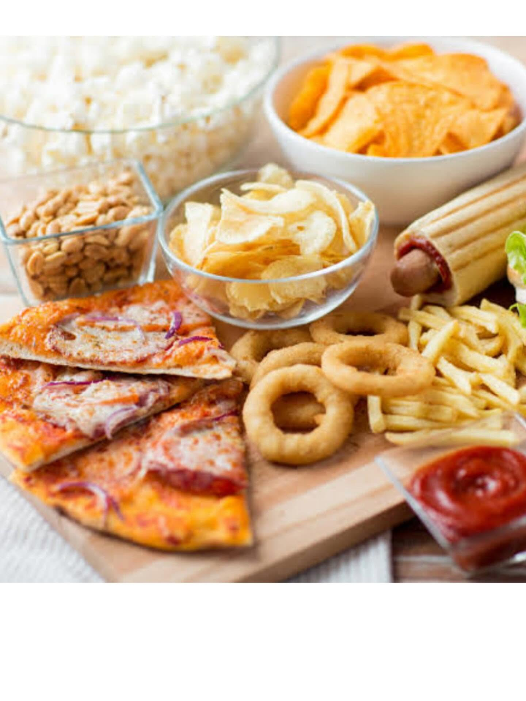
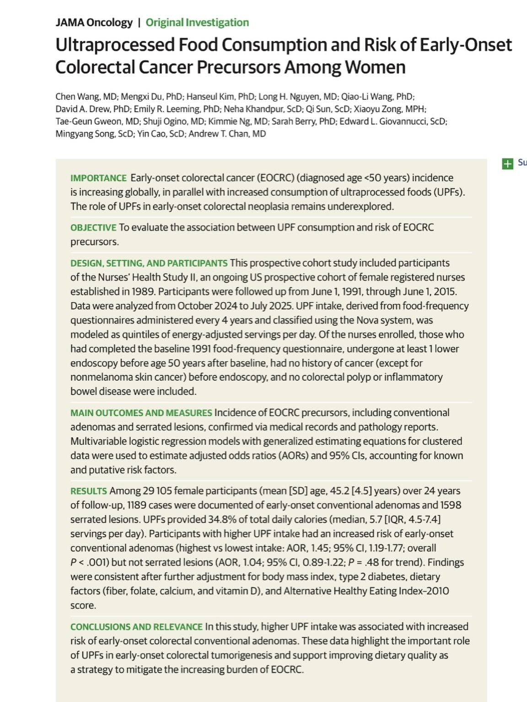
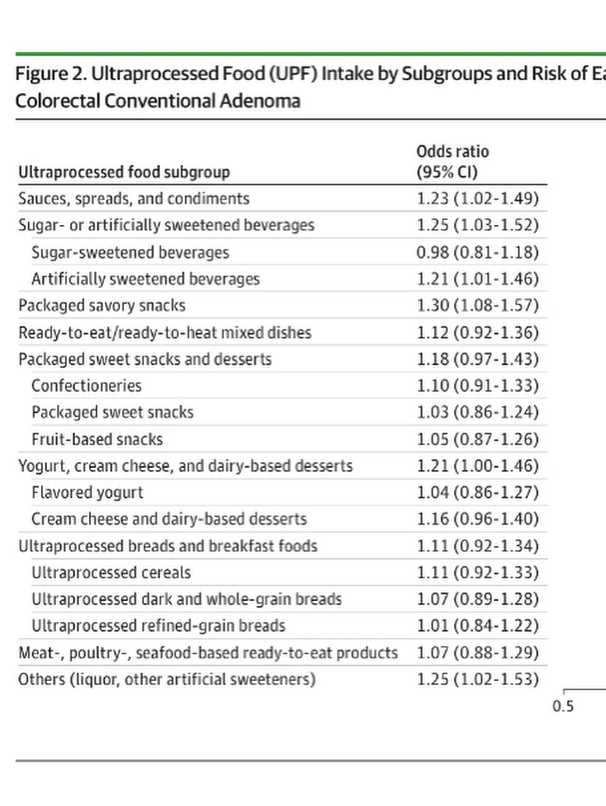
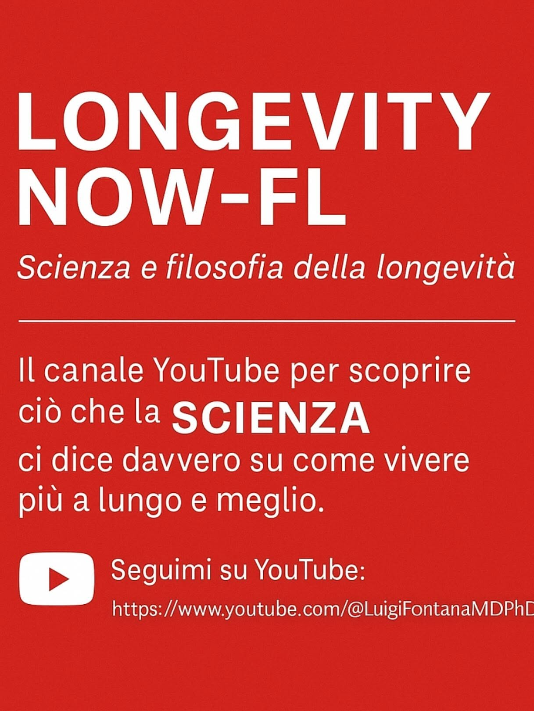

The same research group at Harvard published previously that most of the increased CVD risk from ultraprocessed foods was coming from primarily 2 sources, processed meat + sugary beverages: ↪ Sugary drinks and processed meat drive most ultraprocessed-food CVD risk.
This new publication is about early-onset colon cancer.
#ultraprocessedfoodHD #coloncancerHD #harvardHD #hnsHD
🧬 Alimenti ultraprocessati e rischio di tumore colorettale precoce
Un nuovo studio pubblicato su JAMA Oncology su 29.105 donne sotto i 50 anni ha rilevato che chi consuma più alimenti ultraprocessati presenta un aumento del 45% delle probabilità di sviluppare adenomi colorettali convenzionali a insorgenza precoce, rispetto a chi ne consuma meno.
Nessuna associazione significativa è stata osservata per le lesioni serrate, ma il segnale sugli adenomi convenzionali è chiaro.
🥤 Con gli UPF che rappresentano circa il 35% delle calorie giornaliere in questa coorte, il messaggio è semplice:
👉 Ridurre il consumo di alimenti ultraprocessati può contribuire a diminuire il rischio di tumore colorettale precoce.
Studio: JAMA Oncol. 2025; doi:10.1001/jamaoncol.2025.4777
👩⚕️ I ricercatori hanno analizzato i dati di 29.105 giovani infermiere (tutte <50 anni) del Nurses’ Health Study II, monitorando le abitudini alimentari e la comparsa di neoplasie colorettali confermate nell’arco di 24 anni.
🔍 Risultati principali
- Le partecipanti con il maggior consumo di UPF avevano un 45% di probabilità in più di sviluppare adenomi convenzionali, precursori del tumore colorettale.
- Nessuna associazione significativa con le lesioni serrate.
- Gli UPF rappresentavano il 34,8% dell’apporto calorico totale, evidenziando quanto siano diffusi nella dieta moderna.
📌 Perché è importante
L’incidenza dei tumori colorettali a insorgenza precoce è in aumento a livello globale. Sebbene molti fattori contribuiscano, l’alimentazione è uno dei determinanti modificabili più rilevanti. Questo studio rafforza l’idea che ridurre gli UPF possa aiutare a prevenire i primi cambiamenti tumorigenici nel colon, anche negli adulti più giovani considerati a basso rischio.
🥗 Conclusione
Migliorare la qualità complessiva della dieta non riguarda solo la salute a lungo termine: potrebbe essere fondamentale per contrastare l’aumento dei tumori colorettali nelle popolazioni più giovani.




